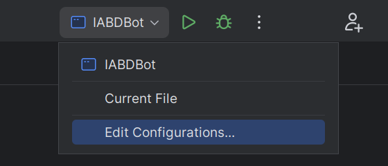

Robocode TankRoyale¶
Preparación del entorno¶
- Al menos java 11 (Yo estoy usando Java 21 y la versión 0.24.4 de Tank Royale)
1 | |
-
Descargar la última versión desde releases: https://github.com/robocode-dev/tank-royale/releases
-
Ejecutar el
jardescargado:
1 | |
-
Descarga y descomprime los Bots de ejemplo: https://github.com/robocode-dev/tank-royale/releases
-
Configura la gui para acceder a la carpeta de robots:
Config->Bot Root Directories(del menú) -
[opcional] Añadir sonidos al gui. Descarga y descomprime la carpeta
sounds.zipde: https://github.com/robocode-dev/sounds/releases
1 2 3 4 5 6 | |
- Necesitaras IntelliJ para poner todo en funcionamiento y para programar tu Bot.
Juega un poco por tu cuenta con el entorno GUI, explora las opciones, tipos de batallas, crea alguna ronda de las mismas, inicializa Bots, añádelos, juega con la velocidad de juego, etc.
Robocode con Maven¶
Desde hace "relativamente" poco, robocode tankroyale está disponible como artefacto del repositorio de maven, si estas familiarizado con el uso de maven puede simplificar bastante el trabajo y actualizaciones de dependencias, te dejo el enlace por si quieres investigar por tu cuenta, ya que escapa del objetivo de esta asignatura: https://central.sonatype.com/search?q=g:dev.robocode.tankroyale&smo=true
Mi primer Bot¶
Proyecto IntelliJ¶
Para acelerar el proceso, he preparado un proyecto en IntelliJ con toda la arquitectura básica que necesitará tu Bot. Descarga y descomprime esta carpeta o esta para maven y abre el proyecto con el IDE IntelliJ.
También necesitaras la libreria (API) de Robocode Tank Royale que puedes descargar desde aquí: https://github.com/robocode-dev/tank-royale/releases. Descarga el archivo: robocode-tankroyale-bot-api-x.y.z.jar
La estructura debería quedar de la siguiente manera:
1 2 3 4 5 6 7 | |
Asegúrate de entender el funcionamiento del Bot IABDBot, tiene comentarios donde se explican partes importante del Bot y que daremos por conocidas en los siguientes puntos.
Es muy importante que entiendas la diferencia entre movimientos bloqueantes y simultáneos, así como las condiciones y los eventos disponibles.
Configuración del servidor (GUI) y el proyecto IntelliJ para ejecutar en local o remoto¶
El servidor permite conexiones en remoto/local a través de un password que se genera automáticamente la primera vez que lanzas la GUI. Este password lo puedes encontrar/modificar en el archivo server.properties, en el ejemplo siguiente la clave de acceso es CEIABDEPM2024
1 2 | |
Otra información que necesitaras será la IP del servidor al que quieres conectar, normalmente será localhost (tu host local), y cuando sea necesario hacer pruebas el profesor te facilitará su IP.
Ahora solo queda configurar nuestro proyecto de IntelliJ para configurar estas variables en el momento de ejecutar el Bot. Accede a la configuración de las ejecuciones en la parte superior derecha (una vez abierta la clase IABDBot.java):

Puedes ver que en el apartado Environment Variables tienes el siguiente valor:
1 | |
Como puedes imaginar SERVER_SECRET hace referencia a la clave del servidor, y SERVER_URL a la dirección del servidor y es donde deberás reemplazar (según el caso) localhost por la IP que te indique el profesor. Así podrás ejecutar tu Bot directamente desde IntelliJ y aparecerá en el Servidor para poder añadirlo a las batallas.
Ojo, el servidor debe estar inicializado antes de lanzar el bot de lo contrario obendrás un error similar a este:
Exception in thread "main" dev.robocode.tankroyale.botapi.BotException: Could not create web socket for URL: ws://localhost:7654 at dev.robocode.tankroyale.botapi.internal.BaseBotInternals.connect(BaseBotInternals.java:268) at dev.robocode.tankroyale.botapi.internal.BaseBotInternals.start(BaseBotInternals.java:254) at dev.robocode.tankroyale.botapi.BaseBot.start(BaseBot.java:114) at IABDBot.main(IABDBot.java:11) Process finished with exit code 1
Si el Bot encuentra el servidor y la contraseña es correcta deberia aparecer esto al inicializarlo en IntelliJ:
1 | |
Prueba por tu cuenta mezclando en las batallas Bots de ejemplo, con tu Bot o incluso el de algún compañero/a.
¿Cómo mejoro mi Bot?¶
Dividiremos todo lo que debemos conocer en 4 apartados:
Conociendo el campo de batalla¶
Sigue atentamente la documentación de RCTR sobre la anatomía de los Bots
Puntos importantes:
- Si el radar no se mueve, no detecta
- Inicialmente el robot, el cañón y el radar se mueven conjuntamente (pero se puede cambiar)
- El Bot se simplifica a un cuadrado de 36x36 unidades.
- Para las colisiones (con Bots o paredes) se simula como un círculo de 18 unidades de radio.
A continuación revisa las coordenadas y ángulos
Puntos importantes:
- Este apartado es totalmente diferente al de Robocode Original.
Estudia también las físicas
Puntos importantes:
- Se frena más rápido que se acelera.
- Cuanto más rápido vas, más lento giras.
- El cañón gira máximo 20º por turno.
- El radar gira máximo 45º por turno.
- La potencia de tiro influye en el daño provocado y los puntos conseguidos, pero también en el calentamiento del cañón.
- Inicialmente el cañón está caliente (3 unidades), al principio has de esperar a que se enfrie para disparar.
- El atropello da más puntos que los disparos (pero te resta energía)
- Si chocas con una pared, pierdes puntos.
- La energía que te sobra en una ronda no da puntos (modo kamikaze con el último robot?)
Por último te en cuenta las puntuaciones
Puntos importantes:
- Consigues puntos si:
- tu disparo golpea a otro Bot (sino, te resta)
- eres el que mata al Bot
- cada vez que otro Bot muere, pero tu sigues vivo
- eres el último robot vivo
- atropellas a otro Bot
- si matas por atropello a otro Bot
- El último Bot que quede vivo no tiene porqué ser el ganador.
Eventos própios¶
Definimos una condición, y cuando esta se cumple se dispara un evento:
1 2 3 4 5 6 7 8 9 10 11 12 13 14 15 | |
Podriamos usar esta condición en un fragmento similar a este:
1 | |
Podriamos usar funciones Lambda de la siguiente manera:
1 | |
El resultado de los dos fragmentos seria el mismo.
Personalizar mi Bot¶
Podemos establecer colores para el cuerpo, torreta de cañón, el radar, el arco de escaneo y de la bala:
1 2 3 4 5 6 | |
Técnicas de escaneo (Radar)¶
Sentidos de nuestro Bot:
Sentido del tacto, tu Bot sabe cuando:
- golpea una pared (
onHitWall), - es alcanzado por un disparo (
onHitByBullet), - es alcanzado por otro Bot (
onHitBot).
Sentido de la vista, tu Bot sabe cuándo ha visto otro robot, pero sólo si lo escanea (onScannedBot)
Otros sentidos, tu robot también sabe cuándo ha muerto (onDeath), cuándo ha muerto otro robot (onRobotDeath).
Además también es consciente de sus balas y sabe cuando una bala ha sido disparada (onBulletFired) ha alcanzado a un oponente (onBulletHit), cuando una bala golpea una pared (onBulletWall) o cuando una bala golpea a otra bala (onBulletHitBullet).
Configurar correctamente tu Bot con:
1 2 3 4 5 6 | |
Que el radar siempre de vueltas:
1 | |
Revisa el API (rescan() i setRescan())
Fijar el radar en un enemigo (one on one radar):
- Escaneo con multiplicador
1 2 3 4 | |
Segun el factor:
1.0- Bloqueo de radar delgado. Debe llamar a scan() para evitar perder el bloqueo. Que Dios te ayude si alguna vez te saltas un turno.1.9- El arco del radar comienza amplio y se estrecha lentamente tanto como sea posible mientras se mantiene en el objetivo.-
2.0: el arco del radar recorre un ángulo fijo. El ángulo exacto elegido depende de las posiciones del enemigo y del radar cuando se detecta al enemigo por primera vez. El ángulo se incrementará si es necesario para mantener el bloqueo. -
Arco de radar Ancho
1 2 3 4 5 6 7 8 9 10 11 12 13 14 15 16 17 18 19 20 | |
-
Radar Oscilante (variable global que sepa la dirección y nos ayude a cambiarla de vez en cuando)
-
Escaneo más inteligente (seguir al cercano? según la situación?) ...
-
Nos interesa mantener una lista de enemigos?
e.getScannedBotId()? y por ejemplo fijar el radar en el más débil?...
Técnicas de desplazamiento (Movimiento)¶
Pensamiento lateral¶
Si has jugado baloncesto antes, sabes que si quieres defender a alguien que sostiene el balón, debes maximizar tu movimiento lateral enfrentándote siempre a él (de frente). Lo mismo ocurre con tu robot.
Para conseguir esta posición debemos hacer algo similar a esto:
1 | |
que siempre colocará tu robot perpendicular (90 grados) a tu enemigo.
¿Hacia adelante o hacia atrás?¶
Cuando te enfrentas a un oponente, la idea de "adelante" y "atrás" (del primer Bot) se vuelven algo obsoletas. Probablemente estés pensando más en términos de "atacar a la izquierda" o "atacar a la derecha". Para realizar un seguimiento de la dirección del movimiento, simplemente declare una variable como hicimos para oscilar el radar.
1 2 | |
luego, cuando quieras mover tu robot, simplemente puedes decir:
1 | |
Puedes cambiar de dirección cambiando el valor de moveDirection de 1 a -1 así:
1 | |
Cambiar de dirección¶
El enfoque más intuitivo para cambiar de dirección es simplemente cambiar la dirección del movimiento cada vez que golpeas una pared o golpeas a otro robot de esta manera:
1 2 | |
Sin embargo, descubrirás que si haces eso, terminarás presionando obstinadamente contra un robot que te embiste desde un costado (como un perro en celo). Esto se debe a que se llama a onHitRobot() tantas veces que moveDirection sigue cambiando y nunca te alejas.
Un mejor enfoque es simplemente probar para ver si su robot se ha detenido. Si es así, probablemente significa que has golpeado algo y querrás cambiar de dirección. Puedes hacerlo con el código:
1 2 | |
Ponlo en tu método doMove() (o en cualquier otro lugar donde estés manejando el movimiento) y podrás manejar todos los eventos de impacto con las paredes u otros Bots.
¿Bailamos?¶
Dando vueltas (Círculos)
Puedes rodear a tu enemigo simplemente usando las técnicas anteriores:
1 2 3 4 5 6 7 8 9 10 11 12 13 14 15 16 17 18 19 20 21 22 23 24 25 | |
Objetivo: rodea a tu enemigo usando el código de movimiento anterior, como un tiburón rodeando a su presa en el agua.
Evita Ametrallamiento
Un problema que puedes notar con el anterior tipo de movimiento es que es presa fácil para los objetivos predictivos porque sus movimientos son tan... predecibles.
Para evadir las balas de manera más efectiva, debes moverte de lado a lado o "atacar". Una buena forma de hacerlo es cambiar de dirección después de un cierto número de "tics", así:
1 2 3 4 5 6 7 8 9 10 11 | |
Mira como se balancea hacia adelante y hacia atrás usando el código de movimiento anterior. Observa lo bien que esquiva las balas. Pero ojo, porque puede afectar a tu precisión de disparo.
Cada vez más cerca
Notarás que tanto el primero como este último tipo de movimientos tienen otro problema: se atascan fácilmente en las esquinas y terminan golpeándose contra las paredes. Un problema adicional es que si su enemigo está lejos, disparan mucho pero no aciertan mucho.
Para hacer que tu robot se acerque a tu enemigo, simplemente modifica el código para que se gire ligeramente hacia su enemigo, así:
1 | |
15 es un factor en grados que puedes modificar y ajustar. Prueba!
Modificando el primero conseguimos una variación que utiliza el código anterior para lanzarse en espiral hacia su enemigo.
Mientras que con el segundo que utiliza el código anterior para acercarse cada vez más. También es bastante bueno para evadir balas.
Fíjate que ninguno de los Bots anteriores queda atrapado en una esquina por mucho tiempo.
Evitando las paredes¶
Un problema con todos los Bots anteriores es que golpean mucho las paredes y golpearlas agota tu energía. Una mejor estrategia sería detenerse antes de chocar contra las paredes. ¿Pero cómo?
Agregar un evento personalizado
Lo primero que debemos hacer es decidir qué tan cerca permitiremos que nuestro robot llegue a las paredes:
1 2 3 | |
A continuación, agregamos un evento personalizado que se activará cuando se cumpla una determinada condición dentro del método run():
1 2 3 4 5 6 7 8 9 10 11 12 13 14 15 16 17 18 19 20 | |
Ten en cuenta que estamos creando una clase interna anónima con esta llamada. Necesitamos hacer override del método test() para devolver un valor booleano cuando ocurra nuestro evento personalizado.
Gestionar el evento personalizado
Lo siguiente que debemos hacer es manejar el evento, que se puede hacer así:
1 2 3 4 5 6 7 | |
Sin embargo, el problema con ese enfoque es que este evento podría dispararse una y otra vez, provocando que cambiemos rápidamente de un lado a otro, sin alejarnos nunca. O si ya aparecemos cerca de la pared quedamos atrapados.
Para evitar este "sacudida de la muerte" deberíamos tener una variable que indique que estamos manejando el evento. Podemos declarar otro así:
1 2 3 | |
Luego maneje el evento de manera un poco más inteligente:
1 2 3 4 5 6 7 8 9 | |
Manejo de los dos modos
Hay dos últimos problemas que debemos resolver. En primer lugar, tenemos un método doMove() donde colocamos todo nuestro código de movimiento normal. Si estamos tratando de alejarnos de una pared, no queremos que se llame a nuestro código de movimiento normal, creando (una vez más) la "sacudida de la muerte". En segundo lugar, queremos volver eventualmente al movimiento "normal", por lo que eventualmente deberíamos tener el "tiempo de espera" de la variable tooCloseToWall.
Podemos resolver ambos problemas con la siguiente implementación de doMove():
1 2 3 4 5 6 7 8 9 10 11 12 13 | |
Con todo el código anterior evitamos chocar contra las paredes. Observa cómo se desliza suavemente hacia los lados pero nunca (bueno, rara vez) los golpea.
Bot multimodo¶
Además de los colores que elijas, la mayor parte de la personalidad de tu robot está en su código de movimiento. Por otra parte, situaciones diferentes requieren tácticas diferentes. Usando el ejemplo de evitar paredes, es posible que desees codificar tu bot para que cambie los "modos" según ciertos criterios. Podrías pensar en algo como esto:
1 2 3 4 5 6 7 8 9 10 11 12 13 14 15 16 17 18 19 20 21 22 23 24 25 26 27 28 29 30 31 32 33 34 35 36 37 | |
Los detalles se dejan (como siempre) como ejercicio para el alumnado.
Técnicas de ataque (Disparo)¶
Técnicas básicas¶
- Separa el movimiento del cañón del movimiento del Bot (
setAdjustGunForBodyTurn) - Técnica de apuntado básica:
setTurnGunLeftosetTurnGunRightjunto congunBearingTo
Fórmula de cálculo de potencia de fuego¶
Otro aspecto importante al disparar es calcular la potencia de fuego de tu bala. La documentación del método fire() explica que puedes disparar una bala en el rango de 0.1 a 3.0. Como probablemente ya habrás concluido, es una buena idea disparar balas de baja potencia cuando tu enemigo está lejos y balas de alta resistencia cuando está cerca.
1 2 3 4 5 6 7 8 9 | |
Podrías usar una serie de declaraciones if-else-if-else para determinar la potencia de fuego, en función de si el enemigo está a 50 unidades, a 200, etc (como en el fragmento anterior). Pero tales construcciones son demasiado rígidas. Después de todo, el rango de posibles valores de potencia de fuego cae a lo largo de un continuo, no de bloques discretos. Un mejor enfoque es utilizar una fórmula. He aquí un ejemplo:
1 | |
Con esta fórmula, a medida que aumenta la distancia del enemigo, la potencia de fuego disminuye. Asimismo, a medida que el enemigo se acerca, la potencia de fuego aumenta. Los valores superiores a 3 se reducen a 3, por lo que nunca dispararemos una bala mayor que 3, pero probablemente deberíamos reducir el valor de todos modos (solo para estar seguros) de esta manera:
1 | |
Evitar disparos prematuros¶
Una situación que encontraras es que tu Bot dispare antes de haber girado el arma hacia el objetivo. Para evitar disparos prematuros, usa el método getGunTurnRemaining() para ver qué tan lejos está tu cañón del objetivo y no dispare hasta que esté cerca.
Además, no puedes disparar si el arma está "caliente" desde el último disparo y llamar a fire() o setFire() solo desperdiciará un turno. Podemos probar si el arma está fría llamando a getGunHeat().
Apuntando de manera predictiva¶
O... "Usar la trigonometría para impresionar a tus amigos y destruir a tus enemigos".
Si quisiéramos poder golpear a un robot que recorre las paredes siempre fallaríamos, necesitamos poder predecir dónde estará en el futuro, pero ¿cómo podemos hacerlo?
$$ Distancia = Velocidad * Tiempo $$ Usando la anterior formula podemos calcular cuánto tiempo tardará una bala en llegar allí.
-
Distancia: se puede encontrar llamando a
distanceTo(e.getX(), e.getY()) -
Velocidad: según la documentación de RCTR, una bala viaja a una velocidad de: $$ 20 - potenciaDeFuego * 3 $$
-
Tiempo: podemos calcular el tiempo resolviendo: $$ Tiempo = {Distancia \over Velocidad} $$
El siguiente código lo hace:
1 2 3 4 5 6 7 | |
Obteniendo futuras coordenadas X,Y¶
A continuación, debemos calcular la posición futura de nuestro enemigo:
1 2 3 4 5 6 7 8 9 10 11 12 13 | |
Girando el arma al punto previsto¶
Ahora debemos apuntar nuestro cañon al lugar previsto de impacto:
1 | |
Disparando!¶
Por último disparamos nuestro cañon
1 2 3 | |
Mejor aún...!¶
Aquí te dejo algunas mejoras para que las valores:
- ¿Debemos esperar siempre a que el arma esté completamente en la dirección calculada?
- Cuando nuestro enemigo se acerca a una pared, nuestros disparos impactan en ella.
- ¿Puedo saber a quien disparo si mi previsión de impacto falla mucho?
Investigación y desarrollo propio¶
A partir de aquí el trabajo será individual de cada alumno (puede solaparse con el paso 3). Deberéis investigar/prever a vuestros adversarios (los conocidos, y los de vuestros compañeros). Aplicar las técnicas que consideréis más útiles para intentar quedar lo más arriba posible en la tabla de clasificación.